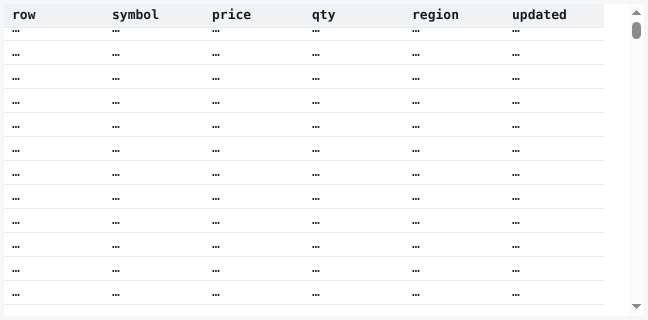
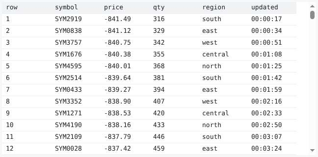
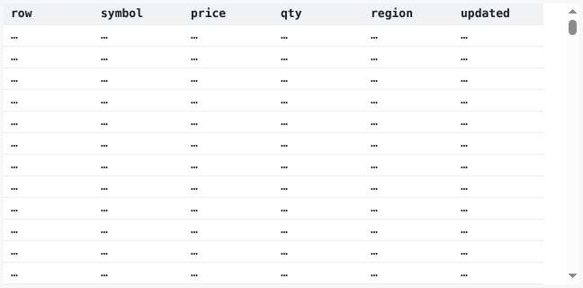
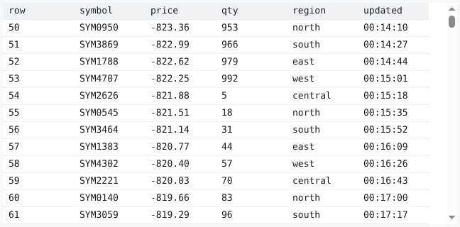

Table engines under load · Module 8 · recorded 2026-11-16
The link is slow, narrow, or silent for a second and a half. Where is my data waiting, and what should the table show meanwhile?
The same lab table, but now its WebSockets pass through a bad network: 25 to 500 ms of delay, a link four times too narrow for the stream, a link that stops for 1.5 s and then delivers everything at once, replies that queue behind each other. Every case is a recorded trace with the backend's and the proxy's counters in it. The module walks them in the language of queues: arrival rate, service rate, queue, age.
What you will be able to do. Name the places between a server's send and your onmessage where bytes wait, and say which of them a trace can show. Say who can tell whom to stop sending, and who cannot. Recognise head-of-line blocking. Say what a table shows while its answer is far away, and what a stall's burst costs.
Why this matters for Tablelab. The engine will sit behind a WebSocket or IPC transport, and the design says "conflation, one pull in flight, report data age". Several beliefs I held about those words did not survive these traces; each is a "Hard learning" box below.
What you need. Module 6 (One trace, two processes) for the backend's lanes and request policies, and Module 7 (Live updates) for the three paces and data age. Frame outcomes are Module 2's (frames.html).
Recorded 2026-11-16, headless Chrome 154.0.8037.57, device scale factor 1.75, one traced run per scenario, browser, proxy and backend on one machine over loopback. The bad network is a user-space proxy (step 2 reads it): it shapes delay and throughput and does not lose packets. The stall and jitter traces were recorded with the proxy as it is now; the others with its first version, which released chunks differently (step 2) and, in these traces, in the right order (their sequence counters read 0). The traces hold no screenshots; the four pictures in step 3 are from a separate, untraced run of the same page. Bold numbers are read from the data and follow a re-recording; plain timestamps and counts are from this recording.
Question I holdA value changes on the server. Before it is a number in a cell it passes through places where it can sit and wait. Which are they, and which of them leave a mark in a trace?
I take a quiet moment of n-stall-msg-tanstack, before its stall: 500 messages a second, one cell each, through the lab's proxy with nothing configured to be slow. I follow message 583 from the server's send to our handler and write down every event that mentions it.
tick producer of the process Backend (node), Chrome_ChildIOThread of Service: network.mojom.NetworkService, and CrRendererMain of the Renderer; zoom to 104–106 ms after the mark trace: start.- 1The server's
produce + sendspan for message 583, at 104.42 ms. - 2Our mark
app: tick messageon the page's main thread, at 105.67 ms: 1.25 ms later. - 3
app: tick apply: the cell's text is written, 0.05 ms.
ms process / thread event
104.42 Backend (node) / tick producer produce + send {"messages":1,"seq":583}
105.57 NetworkService / Chrome_ChildIOThread EpollEvent (the socket is readable; created in net/socket/socket_posix.cc)
105.59 NetworkService / Chrome_ChildIOThread Send mojo message ← start of a flow arrow
105.64 Renderer / CrRendererMain Receive mojo message (network.mojom.WebSocketClient) ← its end
105.64 Renderer / CrRendererMain WebSocketReceive {"dataLength":58}
105.67 Renderer / CrRendererMain app: tick message {"seq":583}, then app: tick apply {"cells":1}
Six events, three processes. Between them are the places where the message could have waited. I list them in order, with what would make each one fill, and what a trace has for it:
| Place | It fills when | What the trace shows of it | |
|---|---|---|---|
| 1 | The sender's code: it decides to send and calls ws.send() | never by itself: send does not refuse | the produce + send spans (lane "backend: tick producer") |
| 2 | The sender's socket buffers: first Node's own (in the process), then the kernel's | the kernel cannot pass bytes on as fast as they come | counter ticks socket buffered bytes = the server's ws.bufferedAmount: the part in the process only. The kernel's part: nothing. |
| 3 | The link: here the lab's proxy | delay, a rate limit, a stall | counter netem queued bytes (to page); instants on the lane "netem proxy" |
| 4 | The receiver's kernel buffer and Chrome's network service, which reads the socket and cuts the bytes into WebSocket frames | the network service stops reading | EpollEvent slices on that process's IO thread (one per socket read) |
| 5 | The pipes into the renderer: a data pipe of 131,000 bytes for payloads, a message pipe for "a frame of n bytes follows" | the page's main thread does not take messages as fast as they are announced | no event of its own. The flow arrow Send mojo message → Receive mojo message crosses it. |
| 6 | The main thread's task queue: one task per message | the thread is busy | the task (ThreadControllerImpl::RunTask, queue FRAME_LOADING_TQ); its wait is the length of the arrow of place 5 |
| 7 | The handler: socket.onmessage, then our code | (it is the service at the end of the line) | WebSocketReceive, FunctionCall, our app: tick message and app: tick apply |
Of the 1.25 ms, 1.15 ms lie between the server's send and Chrome's socket read: place 3. Nothing is configured to be slow, but the proxy releases every chunk from a timer (step 2 reads the line), and Node's shortest timer is one millisecond. The same stream without the proxy, Module 7's s-msg-500-tanstack, is handled ms after it was sent (median). So every number in this module that comes through the proxy carries about one extra millisecond: a property of the instrument.
From the socket read to our handler: 0.1 ms here; the arrow across places 5 and 6 is 0.04 ms long at the median. These places exist, and on a quiet day they are empty.
- Queue, arrival rate, service rate
- A place where things wait for something that handles them one after another. Things come at the arrival rate; the handler finishes them at the service rate. While arrivals are faster, the line grows by the difference.
- Age
- How old a value is when it is used: now minus the time the server sent it. The lab stamps every message with the server's send time on the trace's clock, so age is a subtraction (Module 7).
- Flow arrow
- A pair of events with one id, written where a message is sent and where it is received. Its length is the time the message spent between two threads, waiting included.
To know what the bold numbers are. Age when handled is our mark's time minus the send time the message carries; the two buffer metrics are the maxima of the two counters.
434 const ageHandled = tickMsgs.filter((m) => m.d.sentUs).map((m) => (m.ts - m.d.sentUs) / 1000); 496 socketBufferedMaxKb: … e.name.startsWith("ticks socket") … 497 netemQueuedMaxKb: … e.name.startsWith("netem queued") …
Yes: there are seven places; three have a direct instrument (1, 3, 7), one has half of one (2: the process's part), three are seen through two events and an arrow (4–6).
No: that a counter at zero means an empty path. The kernel's socket buffers on both machines have no event at all. Steps 9 to 11 find megabytes in them.
node lab/harness/q.mjs n-stall-msg-tanstack slices 'produce|EpollEvent|Send mojo|Receive mojo|WebSocketReceive' 104.5 107.2 prints produce + send at 104.42 ms, then the socket read, both ends of the arrow and WebSocketReceive between 105.57 and 105.64 ms.- One message on a quiet link: 1.25 ms from the server's send to our handler, 1.15 ms of it in the lab proxy's timer; 0.1 ms from Chrome's socket read to the handler.
- Between send and onmessage there are seven places to wait; the kernel's socket buffers are the ones no trace event covers.
Next question → Place 3, the link, is sixty lines of Node in this lab. What exactly does it do to my bytes, and what does it not do?
Question I holdnet=1 sends the page's WebSockets through lab/server/netem.mjs. Before I believe a number that passed through it: what does it model, and what not?
I read the proxy. It accepts the page's TCP connection, opens its own to the backend, and copies chunks both ways. Each chunk gets a release time at; four rules move that time later. Then I check the simplest rule, delay, against three traces.
Every "bad network" in this module is one of these lines.
22 const HIGH_WATER = 256 * 1024; 42 let lastRelease = 0; // … at which the previous chunk leaves (one per connection and direction) 47 const release = () => { 50 while (fifo.length && fifo[0].at <= now) { 53 if (!to.destroyed) to.write(chunk); 55 if (queued <= HIGH_WATER / 2 && from.isPaused()) from.resume(); 56 if (dir === "down") counter("netem queued bytes (to page)", queued); 57 if (fifo.length) timer = setTimeout(release, Math.max(0, Math.ceil(fifo[0].at - now))); 59 from.on("data", (chunk) => { 62 let at = now + c.latencyMs + (c.jitterMs ? (Math.random() * 2 - 1) * c.jitterMs : 0); 63 if (c.kbps) at = Math.max(at, lastRelease + (chunk.length * 8) / c.kbps); // ms to send these bytes 66 const since = at - opened - c.stallAtMs; 68 if (phase >= 0 && phase < c.stallMs) { 69 at += c.stallMs - phase; 74 at = Math.max(at, lastRelease); // never reorder 76 queued += chunk.length; 77 if (queued > HIGH_WATER) from.pause(); 82 fifo.push({ chunk, at }); 83 if (!timer) timer = setTimeout(release, Math.max(0, Math.ceil(at - now)));
- One-way delay, round trip
latencyMsis applied to each direction. A request and its reply cross twice: the round trip is twice the delay.- Bandwidth in bytes
- 256 kbit/s is 32,000 bytes a second. Line 63 lets a chunk of n bytes leave no sooner than n × 8 ÷ kbps milliseconds after the one before.
- High-water mark
- A queue length above which a stage stops taking more. Line 77: above 256 KB the proxy stops reading from the sender; line 55: it reads again at 128 KB.
- 1Delay (62): release = arrival + delay ± jitter, in each direction.
- 2Bandwidth (63): bytes leave no faster than
kbps. - 3Stall (66–69): a chunk whose release falls into the stall window leaves at the window's end. The window is counted from the moment the socket opened, not from the trace's start:
stallAtMs: 1300lands at about 230 ms on a chart whose zero is the start mark. - 4Order (74, 82, 50): a chunk's release time is never earlier than its predecessor's, and chunks leave through one first-in-first-out queue served by one timer. As TCP: nothing overtakes.
- 5Push-back (77, 55): the proxy stops reading from the sender when it holds more than 256 KB, so the queue should move back into the sender's socket.
- 6The instrument (56): the counter. It has one name for every connection of the server; that matters in step 10.
The first version of this proxy also said // never reorder, and reordered. It ordered the release times and then gave each chunk a timer of its own. Node keeps timers in whole milliseconds, one list per duration, so 750 chunks due at the same instant after a stall left in 191 shuffled runs. What showed it was the page's own counter of sequence jumps (ticks.ts:72), which read 747 where it now reads . The rule I keep: order is something the receiver checks, with a sequence number; and a network simulator is a program whose claims need a test like any other.
Each direction takes the configured delay plus 0.3 to 0.9 ms; a round trip is twice the delay plus about 1.5 ms. The delay is plain arithmetic on release times.
What the file's own header says it leaves out: "It does not model loss, retransmission or congestion-window dynamics" (lines 16–17). Two more limits follow from the code. lastRelease is per connection and direction (line 42): two sockets each get the full bandwidth, where a real narrow link would be shared. And the proxy is a second TCP connection: between the server's code and the page there are now two pairs of kernel socket buffers on loopback.
Yes: delays and rates in these traces are exact and repeatable; what waits, waits in a place I can name.
No: anything about loss. On a real path a lost segment is sent again after a timeout that doubles on each failure, and because TCP is "a reliable, in-order, byte-stream service" everything behind it waits too (read: RFC 9293 §2.2 and §3.8.2, "exponential backoff for successive RTO values"). A real 500 ms path with loss is worse than this one, and its stalls are that backoff.
node lab/harness/q.mjs n-lat-500-tanstack marks 'ws (request|round trip)|content complete': four round trips of about 1,001 ms, sent at 6, 1,007, 2,009 and 3,009 ms, and one content complete at 4,011 ms.- The lab's bad network moves each chunk's release time: delay ± jitter, a byte rate, a stall window counted from the socket's open; chunks leave through one FIFO; it stops reading its sender above 256 KB (netem.mjs:62–83).
- "A comment that says never reorder means order is kept": the proxy's first version shuffled a burst; the page's sequence counter caught it.
- Not modelled: loss, retransmission, congestion window, a bottleneck shared between sockets.
- Round trip = 2 × latencyMs + about 1.5 ms (51 / 201 / 1,001 ms).
Next question → With every answer a full second away, what is on the screen while I scroll?
Question I holdI scroll for two seconds at 1,200 px/s, 50 rows a second, and every reply needs one second. What do the two panels show during those two seconds?
The TanStack panel writes … into a row it has no data for. regular-table keeps its previous rows on screen until a draw completes. Halfway through the scroll, what do they show?
c. One panel is honest and empty, the other is full and about another place. The pictures and the two request lanes below show both.
n-lat-500-tanstack (our source with one request in flight) and n-lat-500-regular. The input is two one-second wheel gestures back to back (the harness repeats the gesture once): about 2,400 px, from 0 to 2,067 ms, ending at row 100. I read each request's rows from its mark and each draw's rows from its measure.
- 16 ms: request #2 asks for rows 0–14, the range wanted at that moment. Each blue bar is one round trip, one second long.
- 21,007 ms: #2 is back; #3 asks for rows 47–63. The scroller is 47 rows further.
- 32,009 ms: #4 asks for rows 94–110.
- 42,067 ms: the last input (
GestureScrollEnd). The scroller rests at row 100; the panel wants rows 98–113. - 53,009 ms: #4 is back with rows 94–110. Three rows of the wanted range are missing, so #5 asks for 98–113.
- 64,011 ms: ◆ the first moment since the scroll began that the visible rows show their data.
- 7regular-table, 1,036 ms: its first draw of the scroll completes, with rows 1–13, asked for at 34 ms.
- 82,051 ms: its second draw: rows 50–61, asked for at 1,036 ms. The scroller is at row 100.
- 93,053 ms: ◆ rows 100–111.

…. Separate untraced run, same query and delay.

….
The TanStack panel made 4 requests. Every app: draw between 0 and 4,010 ms carries filled: false. regular-table made 3 requests and drew three times; each draw showed the rows of the position it had asked about one second earlier.
Why is the TanStack panel empty for four seconds, when replies do arrive every second? At 500 ms the answer looks obvious: reply #3 (rows 47–63) lands when the panel wants rows 94–110. But the 25 ms trace, with a 51 ms round trip in which the scroller moves only 2.5 rows, has the same single ◆ ( in the whole run, after the scroll). The reply overlaps the wanted range almost completely, and still nothing is filled.
To find who decides that a row stays …. It is our page, not the library: TanStack Virtual computes ranges and never fetches.
160 peek(y0, y1, x0, x1) { 162 if (has(y0, y1, x0, x1)) return collect(y0, y1, x0, x1); // every cell of the range, or … 163 request(y0, y1, x0, x1); 164 return undefined; // … nothing 113 const data = source.peek(first, last + 1, x0, x1 + 1); // ws: asks for what is missing 121 const row = data?.[item.index - first]; 129 } else if (el._x0 !== x0 || el._x1 !== x1 || (!el._ready && row)) fill(el, item.index, x0, x1, row);
The cache is per row, but the panel reads it all-or-nothing. A range that moves by one row every 20 ms is never whole.
- Placeholder
- A cell that says "no data yet". Honest; useless to read.
- Stale rows
- Real data, for a position the user has left. Readable; wrong place; nothing marks it.
- regular-table's draw loop
- A draw awaits its data listener; one draw is in flight; the table is sticky, so the old rows stay under a moving scrollbar (Module 3, anatomy.html).
I believed the placeholders were the price of the delay: data is a second away, so the screen is a second behind. The 51 ms trace shows the same empty table. The screen was empty because the panel waits for the whole wanted range, and a moving range is never whole. The rule I keep: with a far source, draw from what is cached row by row. Atomic windows turn any delay, however small, into a blank table while moving.
Yes: with one second of round trip, this page's TanStack panel shows nothing for the whole scroll and regular-table shows rows up to a second (50 rows) off, unmarked.
No: that "TanStack shows placeholders and regular-table stale rows" by nature. The first is 60 lines of our page; the second is regular-table's draw loop meeting a listener that awaits the network. The four pictures are from a separate untraced run; the traces carry the marks, not pixels.
A proposal: a row on screen is in one of three states, and the painter shows which: current, stale (with the age of the window it came from), unknown. A full table of rows for another position, drawn like current data, is the state to rule out.
node lab/harness/q.mjs n-lat-500-regular marks 'listener': three data listener measures of about 1,001 ms (the await), and style listener entries whose first is 1, then 50, then 100.- 1 s round trip, 2 s scroll: the TanStack panel shows placeholders in every row from the start of the scroll to 4,011 ms; regular-table draws three times, each time rows one second old.
- The placeholders come from our page reading its cache all-or-nothing (source.ts:162–164, tanstack.ts:113–129), not from the delay: a 51 ms round trip gives the same blank scroll.
- "The screen is one round trip behind": with atomic windows it is blank at any round trip.
Next question → I stop scrolling. How long until the rows are right, and what decides that?
Question I holdAfter the last input the TanStack panel needed 1,944 ms to show the right rows, regular-table 1,010 ms. The link is the same. Where does the factor of two come from?
Both have one request in flight at a time. Why is one twice as slow to settle?
b. At 25 ms of delay the order is the other way round: regular-table is the slower one. The table shows all six, and a seventh that asks for everything.
In round trips, the six one-in-flight runs settle after 1.5, 1.8, 1.8, 1.6, 1.9 and 1.0. Always between one and two.
The reason is in step 3's chart. When the scroll stops, a request is out, sent some time a ago for a range that is already old. The final range can only be asked for when that one returns. So the wait is (round trip − a) + round trip. For the TanStack panel at 500 ms: #4 left at 2,008.6 ms, the last input came at 2,066.7 ms, a = 58 ms, and 943 + 1,001 = 1,944. For regular-table: a reply landed 4 ms before the last input and the next request left 8 ms after it: 8 + 1,001 = 1,010. Nothing about the libraries; only where in its round trip the scroll happened to stop.
Every range. n-lat-500-tanstack-every asks at once for each row that enters: requests of one row each (source.ts:113–118 trims a request to the rows not cached or in flight). The request for the last row left 8 ms before the last input, and it settles one round trip later. That is the least a client can do without guessing ahead. And nothing filled progressively: all 100 replies were in the cache one by one, and the panel, reading all-or-nothing, showed them together at 3,051 ms.
| Policy | Requests | Settles after the stop | Costs |
|---|---|---|---|
| One in flight (newest range next) | at most one per round trip | 1 to 2 round trips, by chance of phase | up to one wasted round trip at the end |
| Every range | one per change of range (here 100) | 1 round trip | 25 times the requests; against a backend with a queue, Module 6's b-drag-every-tanstack shows the line it builds |
| Ask ahead (prefetch) | as above, larger | 0 while the guess holds | rows fetched = speed × round trip ahead: 50 rows/s × 1 s = 50 rows, four screens, in the direction of travel; nothing for a jump |
The third row is reasoning, not a trace. This page cannot show it: its overscan rows belong to the same all-or-nothing range as the visible ones, so asking ahead would only make the range harder to complete.
I read "1,944 against 1,010" as "the TanStack source needs two round trips, regular-table one" and started looking for the cause in the code. The cause was phase. The rule I keep: before explaining a difference between two single runs, look for the same pair at another setting. The 25 ms pair, against ms, ends the theory in one line.
Yes: one in flight settles in one to two round trips; asking for every range settles in one and multiplies the requests.
No: that every range is better. Its 100 requests met a server that answers in 0.02 ms. And the distribution between one and two round trips is six points here, not a measurement of it.
A proposal: keep one pull in flight while the window is moving, and when the window has stopped changing, let the final window go out at once instead of waiting for the stale pull (a second request, or a cancel and a resend). Draw rows as they arrive. Report the age of the shown window: now minus the time its request left.
node lab/harness/q.mjs n-lat-500-tanstack-every marks 'content complete|ws request' 1900 3100: the last request marks up to 2,051 ms, then one content complete at 3,052 ms.- One request in flight settles (round trip − age of the in-flight request) + one round trip after the stop: 1.0 to 1.9 round trips in six runs.
- Asking for every range: 100 requests instead of 4, right rows exactly one round trip after the last range was wanted.
- "The TanStack source needs two round trips, regular-table one": at 25 ms the order is reversed; it is phase.
- Asking ahead needs speed × round trip rows of lead (50 rows at 1 s); not shown by a trace.
Next question → Delay is a link that works, slowly. What happens when it passes nothing at all for a while?
Question I hold500 updates a second are flowing. The link stops passing data for 1.5 s (a radio handover, a suspended laptop) and no connection breaks. What does the server see, what does the page see, what does the user see?
n-stall-msg-tanstack: the keyed panel, one cell patched per message. The proxy stalls from 1,300 ms after the socket opened; on this chart, whose zero is the start mark, that is 227 ms.
netem queued bytes (to page) of Backend (node), next to CrRendererMain.- 1227.1 ms: the proxy's instant
stall down 1500 ms. From here its queue counter climbs in a straight line. - 2The server keeps producing a message every 2 ms. Its own socket counter (last row) stays at 0: every
sendis accepted. - 3The page: the last message is handled at 226.0 ms, the next at 1,727.7 ms. Between them our handler does not run.
- 4Frames: one "no update wanted" at 265.3 ms, then no frame at all until 1,715 ms. Nothing changed, so nothing was drawn.
- 51,727.7 ms: everything at once (next step).
For 1.5 s the page was idle and correct by every local measure: socket open, no error, no long task, no dropped frame. The proxy's queue grew to KB, 750 messages of 62 bytes. The oldest message of the burst was ms old when the handler saw it.
The user saw a table in which every cell holds a number, as always. The numbers were up to 1.5 s old and nothing said so. A stall is not a failure the page is told about; it is an absence.
Two signals were available. Silence: at 500 messages a second, 100 ms without one is already 50 missing; a timer can see that during the stall. Age: each message carries its send time, so the handler can compute how old it is; that works only after the stall, when the burst lands. Neither is in the lab page.
Yes: a stalled link is invisible to the code at both ends; the queue was in place 3; the screen stayed plausible and went stale at one second per second.
No: that silence always means a stall. A stream that is allowed to be quiet needs a heartbeat before silence can mean anything. And a real stall's queue is not in a proxy: it is in the sender's kernel, waiting for a retransmission timer (read, RFC 9293 §3.8.2; not modelled here).
A proposal: the transport sends a heartbeat when it has nothing else to send, and the view keeps "time since anything arrived". Past a threshold the painter marks the whole view stale and shows the age. This is the only defence that works while the link is still silent.
node lab/harness/q.mjs n-stall-msg-tanstack frames 235 1710 prints two vsync lines: 248.68 ms, and state none at 265.34 ms. Nothing else in 1.4 s.- A 1.5 s stall: no message, no frame, no error on the page; the server's socket counter stays 0; 750 messages (46 KB) wait in the link.
- During a stall the screen is plausible and stale; only a silence timer (with a heartbeat) can tell while it lasts.
Next question → At 1,727 ms the proxy lets 750 messages go at once. What does that look like on the main thread?
Question I hold46 KB holding 750 messages reach Chrome within a few milliseconds. How are they handed to my handler?
What does CrRendererMain show from 1,727 ms on?
b. No task in this trace reaches 50 ms ( long tasks; the longest is ms). The burst is a line of 750 tasks, and a frame has to stand in that line.
- 11,727.7 ms: the first message of the burst is handled.
- 21,785 ms: the line is empty again; from here one message every 2 ms as before.
- 3The lane of tasks of 1 ms or more holds a few thin bars. The dense band above it is made of tasks of 0.03 to 0.15 ms.
- 4The main frame for vsync 183: asked for at 1,748.78 ms, started at 1,782.1 ms. It waited ms.
- 5Vsync 184 is dropped (red): the main frame before it was still in the line.
network service, Chrome_ChildIOThread EpollEvent (socket read): 1727.43 ms, for 2.10 ms
Send mojo message, per millisecond: 1727: 134 · 1728: 430 · 1729: 231
renderer, CrRendererMain Receive mojo message, per 2 ms: 20 to 60, from 1728 to 1784
arrow Send → Receive (wait in places 5–6) before the stall: median 0.04 ms in the burst: median 29 ms, longest 51.8 ms
The network service read the whole burst from the socket in one 2 ms read and announced all 750 frames to the renderer within 3 ms. Nothing slowed it: 46 KB fit into the 131,000-byte pipe. So in three milliseconds the queue moved from the link (place 3) into the main thread's task queue (place 6), and that thread needed 57 ms to work through it: one task per message, each with one WebSocketReceive, median 44 µs, mean 69 µs. They arrived in sequence: the page counted jumps.
The main frame asked for at 1,748.78 ms ran at normal priority, in arrival order, behind the tasks that were posted before it. Its vsync was shown 35 ms late and the next one not at all.
One run is one run: an earlier recording of this same scenario (replaced when the proxy was repaired) worked through its burst in 22 ms at 24 µs a message. The shape was the same; the cost of a message was not.
Could Chrome have handed over several messages in one task? The code can: it is a loop over every announced frame whose bytes are in the pipe.
1038 void WebSocketChannelImpl::ConsumePendingDataFrames() { 1040 while (!pending_data_frames_.empty() && !backpressure_ && 1041 GetState() == State::kOpen) {
But each announcement (OnDataFrame, line 630) arrives as its own mojo message in its own task, finds its bytes present and consumes exactly one frame. In the trace the 750 tasks are on FRAME_LOADING_TQ at NORMAL_PRIORITY, posted from PostDispatchNextMessageFromPipe. Batching would need a frame whose bytes arrive after its announcement; I did not see one in these traces.
- Drain time
- A backlog of N items, each costing s, while new ones keep coming at rate λ, is gone after N·s ÷ (1 − λ·s). Here 750 × 69 µs ÷ (1 − 500/s × 69 µs) = 54 ms.
- FIFO at one priority
- Chrome's main thread runs the oldest task of the highest priority that has work. WebSocket tasks and the main frame's task are both "normal" here, so the frame waits its turn (Module 7 has the priorities).
Yes: a burst of N messages is N tasks; its cost is N times the cost of one message; a main frame queues behind whatever part of the burst was posted before it.
No: that Chrome never batches (the loop exists), or that a burst cannot block: at 25 to 70 µs a message, 10,000 messages are a quarter to two thirds of a second of main thread that no single task shows. A search for "long tasks" finds nothing here.
node lab/harness/q.mjs n-stall-msg-tanstack tasks 1727 1790 0 lists (the first 300 of) the tasks: FRAME_LOADING_TQ NORMAL_PRIORITY … PostDispatchNextMessageFromPipe. In Perfetto, search WebSocketReceive on CrRendererMain and watch the hits bunch up from 1,727 ms.- The burst is 750 tasks, one message each, in sequence, done in 57 ms (22 ms in an earlier recording); no long task. Chrome's network service passed all 750 to the renderer within 3 ms.
- A message of the burst waited up to 52 ms in the renderer (normally 0.04 ms); a main frame behind it waited 33 ms, one vsync was dropped.
- Blink can deliver several WebSocket frames in one task (websocket_channel_impl.cc:1040); with one announcement per task it delivers one.
Next question → If the burst is N tasks, then what one task costs is the applier's choice. Which way of applying makes the burst cheap?
Question I holdPatch a cell per message; mark dirty and patch once per frame; ask regular-table for a draw per message; set React state per message. Which of the four gets through 750 messages with the least damage?
- 1Keyed, per message: the band of handled messages is 57 ms wide (1,728 to 1,785 ms).
- 2Keyed, per frame: 19 ms (1,743 to 1,762 ms).
- 3regular-table: 160 ms (1,745 to 1,905 ms).
- 4Its main frame: asked for at 1,761.1 ms, run at 1,846.0 ms.
- 5React: 27 ms (1,711 to 1,738 ms).
| Applier (trace) | Burst handled in | One message's task, median | Wait of a message in the renderer, median / longest | What 750 messages became |
|---|---|---|---|---|
| keyed, per message | 57 ms | 44 µs | 29 / 52 ms | 750 cell writes |
| keyed, per frame | 19 ms | 20 µs | 7.8 / 15.7 ms | one apply of 24 cells at 1,761 ms |
regular-table, draw() per message | 160 ms | 180 µs | 78 / 147 ms | 750 complete draws |
| React, state per message | 27 ms | 27 µs | 12.7 / 23 ms | a handful of renders |
Per frame is still 750 tasks. With apply=raf the handler only parses, stores the value and writes one mark; the DOM gets one apply of 24 cells instead of 750 writes. That made a message cheaper here (20 µs against 44 µs; in an earlier recording the two were equal at about 22 µs). But the burst is still 750 deliveries: 20 ms of main thread that no frame callback can remove. It kept all its frames because its burst happened to fit between two main frames (longest wait ms). That is phase again.
regular-table ran 750 draws. Each message's task is about 0.2 ms: 0.03 ms of handler, then 0.18 ms of microtasks that contain a forced layout (6 objects dirty). That is a whole draw, finished inside the task that asked for it. Over the run it received draw requests and ran draws. Its main frame waited ms, and then ran at VERY_HIGH_PRIORITY at 1,845.96 ms: 100 ms after the previous main frame ended at 1,745.94. That is Chrome's rendering-starvation rule (Module 7), and it is what ended the wait.
React batched by itself. Over the run the page handled messages and React rendered times: one render per message in steady state, and about 770 fewer than messages, which is the burst. Its renders run in tasks of their own (FRAME_PAUSABLE_TQ, posted through a message port) that stand in the same line; each render covers every state update made before it. (How React schedules them I infer from those tasks; I did not read React's source for this module.)
regular-table has a lock that merges draw requests. Why did it merge none?
57 export async function throttle_tag<T>(tag: any, f: () => Promise<T>) { 61 if (TAGS.has(tag)) { // a draw is in flight: wait for it 62 await TAGS.get(tag)?.promise; 63 if (TAGS.has(tag)) { 64 await TAGS.get(tag)?.promise; 65 return; // … and somebody else already ran: skip mine
The lock merges calls that arrive while a draw is awaiting something. With rows computed in the page, a draw awaits only promises that are already resolved, so it completes in the microtasks of the task that called draw(). The next message's task finds no draw in flight.
- Coalescing needs a gap
- Two requests merge only if the second arrives before the first has run. React leaves that gap (it renders in a later task); a frame callback leaves it (until the next frame); a draw that completes in its caller's microtasks leaves none.
- Conflation by key
- Keep only the latest value per cell. The per-frame policy does this in the page: 750 messages for 24 cells became 24 writes.
I expected "apply once per frame" to turn a burst into one cheap callback. It bounded the DOM work, 24 writes instead of 750, and still ran 750 tasks, because every message arrives as its own task and is parsed and marked there. The rule I keep: to bound what a burst costs the main thread, the messages must not reach it one by one. Conflate before it: in a worker (Module 7's s-worker-8000-tanstack takes 8,000 messages a second with the main thread almost idle, so 750 at once is a tenth of a second of that load; inferred, there is no stall trace with the worker) or at the sender.
Yes: the burst's length is N × the cost of one message's task; a per-message draw makes that cost a draw; per-frame apply bounds DOM writes, not tasks.
No: that conflation at the sender removes the burst. With one conflated message per 50 ms, a 1.5 s stall still queues 30 messages, 29 of them obsolete pictures of the same cells: the sender does not know the link is stalled (arithmetic, not a trace).
node lab/harness/q.mjs n-stall-msg-regular tree 1800 1800.5 main 5: message tasks of about 0.25 ms, each socket.onmessage (0.03 ms) followed by RunMicrotasks with Document::UpdateStyleAndLayout and a Layout of 6 dirty objects inside.- The burst took 19 ms (keyed, per frame), 27 ms (React), 57 ms (keyed, per message), 160 ms (regular-table, a draw per message; seven frames dropped, main frame rescued by the 100 ms starvation rule).
- "Applying once per frame turns a burst into one callback": the DOM writes fell from 750 to 24, the 750 tasks stayed (20 ms).
- regular-table's lock merges draw requests only while a draw is awaiting (utils.ts:61–65); with a synchronous data listener none ever is.
Next question → The line is empty again. Is everything as it was before the stall?
Question I holdThe line is empty again. Is that the whole bill? I compare a frame from before the stall with a frame from 200 ms after the burst, in regular-table's run.
- 1194.42 ms: the main frame begins (grey tick on the compositor lane:
ScheduledActionSendBeginMainFrame). - 2195.06 ms: its commit arrives on the compositor thread and is activated.
- 3195.26 ms:
ScheduledActionDraw. The frame shown for this vsync contains this vsync's DOM. Presented 1.2 ms after the vsync.
- 11,994.39 ms: the main frame begins.
- 21,994.42 ms: the draw, 0.03 ms later. It can only contain the previous vsync's commit.
- 31,995.02 ms: this vsync's commit arrives and is activated, and now waits 16 ms for the next draw.
The same work in a different order: before, commit then draw; after, draw then commit. Every frame after the burst is counted "without the main thread's update", and every value reaches the screen one vsync later than before the stall. Then I look at the other three runs, and the picture is not "a burst makes frames late":
| Trace | Frame presented after its vsync: before the stall → after the burst | Age of a value on screen, median: before → after | main_thread_missed_last_deadline |
|---|---|---|---|
| regular-table, draw per message | 1.2 → 17.2 ms | 10.5 → 26.4 ms | false, then true from 1,777.9 ms to the end |
| keyed, per message | 17.4 → 17.4 ms | 27.0 → 26.7 ms | true before and after |
| keyed, per frame | 17.0 → 1.6 ms | 33.3 → 17.9 ms | false throughout |
| React, state per message | 16.9 → 1.4 ms | 26.5 → 10.4 ms | false throughout |
One run got a vsync later, two got a vsync earlier, one was late all along. Frames counted "without the main update" over the whole run: , , and , in the table's order. The main thread is between 4 and 14% busy in all four.
The frame pipeline has two steady states, one vsync apart: the screen shows this vsync's DOM, or the previous one's. Which state a run is in was set by an accident: a main frame that waited behind the burst (regular-table), or the 1.5 s without frames after which the pipeline started afresh (React and the per-frame run, which were in the late state from page load). "Without the main update" names the first form of the late state: the compositor drew before this vsync's commit. It says the draw came first, not that the main thread was slow (Module 2, frames.html). The second form has complete frames that are still presented a vsync later, and no flag.
To see why, in regular-table's run, one late frame kept the next ones late.
1325 // If a new or undrawn active tree is pending after the deadline, 1326 // then the main thread is in a high latency mode. 1327 main_thread_missed_last_deadline_ = 1328 CommitPending() || has_pending_tree_ || active_tree_needs_first_draw_; 1400 if (active_tree_needs_first_draw_) // in ShouldTriggerBeginImplFrameDeadlineImmediately() 1401 return true;
A commit that was activated after its vsync's draw is "an undrawn active tree". At the next vsync the compositor draws it immediately (1400), before the new commit can arrive; so that new commit is again undrawn after the deadline (1327). The state feeds itself.
- Waiting for the commit
- Normally the compositor holds its draw until the main thread's commit for this vsync has arrived, up to a deadline. In regular-table's trace each vsync before the stall has two deadline decisions,
LATEthenIMMEDIATE; after the burst onlyIMMEDIATE(Module 2 explains the modes). - Age on screen
- Send time of a value to the presentation of the frame that carries it (Module 7). It is the number that sees both forms of "late".
I measured the burst by the time its queue took to empty. In the first recording of these scenarios two runs came out a vsync later and I wrote "a burst leaves the pipeline one frame late". The re-recording has one run later, two earlier. The rule I keep is narrower and more useful: after any disturbance compare the steady state before and after, by age on screen; and before comparing two runs at all, check which of the two states each is in. A difference of 16 ms in data age may be the pipeline's state and not my change.
Yes: in these runs the steady state after a stall and its burst differed from the one before by one vsync of data age in three of four cases, in both directions.
No: which way it goes, or why the pipeline stays in the late state when the main thread is idle. One headless run each, software compositing. This is Module 2's ground; here it is a cost, or a gift, of a disturbance that I did not expect.
node lab/harness/q.mjs n-stall-msg-regular frames 180 215 and then … frames 1990 2025: state all, presented about 1.3 ms after the vsync; then state partial, presented about 17.2 ms after. The same two commands on n-stall-msg-react give 16.9 ms, then 1.3 ms, both all.- After the stall and burst, values reach the screen one vsync later than before in regular-table's run (10.5 → 26.4 ms) and one vsync earlier in two others; the keyed per-message run was late before and after.
- An active tree left undrawn after the deadline puts the scheduler in high-latency mode and is drawn immediately at the next vsync (scheduler_state_machine.cc:1327, 1400).
- "A burst leaves the frame pipeline one frame late": a re-recording moved two of four runs the other way.
Next question → A stall ends. What about a link that works all the time, but is too narrow for the stream?
Question I hold2,000 messages a second of about 62 bytes are close to a megabit. The link passes 256 kbit/s. Arrivals are four times the service rate. Where does the difference go, second by second?
n-bw-256-ticks, three seconds. The stream had been running for about a second when the trace started. I put the proxy's counter and the server's socket counter under each other, and compute what neither shows: bytes the server has sent and the page has not handled, minus the two counters.
- 1The server: 2,000 messages a second, evenly.
- 2The page: a second, evenly: 32,000 bytes ÷ 62. Each one older than the last.
- 31,650 ms: the proxy's queue reaches 256 KB and it stops reading from the server (first counter). The server's own counter (second) does not move: every sample is 0 (the chart cannot scale to 0 and labels it 1).
| At | Sent, not yet handled | in the proxy (counter) | in the server process (counter) | left over: in no counter |
|---|---|---|---|---|
| 0 ms | 95 KB | 97 KB | 0 | ≈ 0 |
| 1,000 ms | 185 KB | 191 KB | 0 | ≈ 0 |
| 1,650 ms | 244 KB | 252 KB | 0 | ≈ 0 |
| 2,000 ms | 276 KB | 247 KB | 0 | 29 KB |
| 2,500 ms | 321 KB | 231 KB | 0 | 90 KB |
| 3,000 ms | 367 KB | 215 KB | 0 | 151 KB |
The backlog grows by 92 KB a second: 124 KB arrive, 32 KB leave. Until 1,650 ms all of it is in the proxy. Then the proxy stops reading, its queue slowly falls, and the surplus goes somewhere that has no counter: the kernel's socket buffers between the server and the proxy (place 2's second half). The server's bufferedAmount is KB at its highest.
Age: the median of the first half of the messages is ms, of the second half ms. It grows by 0.75 ms every millisecond (1 − 502 ÷ 2,000), and nothing in sight will stop it.
- Utilisation ρ
- Arrival rate ÷ service rate. Here 2,000 ÷ 502 ≈ 4. Above 1 the queue grows by (arrivals − service) for as long as it lasts.
- A queue's size in time
- Bytes waiting ÷ bytes leaving per second. The proxy's 256 KB in front of a 32 KB/s link is eight seconds of data. The same buffer in front of a 4 MB/s link is 64 ms.
- Bufferbloat
- A large buffer before a slow link does not lose anything. It converts overload into delay, silently.
The proxy's push-back: this is the lab's stand-in for a receiver that closes its TCP window. "The window sent in each segment indicates the range of sequence numbers the sender of the window (the data receiver) is currently prepared to accept" (read: RFC 9293 §3.8.6).
76 queued += chunk.length; 77 if (queued > HIGH_WATER) from.pause(); 55 if (queued <= HIGH_WATER / 2 && from.isPaused()) from.resume(); // in release()
Yes: with ρ = 4 the queue grows without bound; it fills the places in order from the bottleneck backwards (proxy, then kernel); after three seconds the server's own code has seen nothing.
No: that the server would never see it. Step 11 measures how much the kernel takes before it does: megabytes. At 92 KB a second that is the better part of a minute away.
Backend (node) and look at the two counter tracks side by side: one climbs to 262,000 and then sinks slowly, the other is a flat zero. Then node lab/harness/q.mjs n-bw-256-ticks summary and find ageFirstHalf, ageSecondHalf under ticks.- 256 kbit/s under a 990 kbit/s stream: backlog +92 KB/s; first all in the proxy (to 256 KB at 1,650 ms), then 151 KB more in a place without a counter; the server's bufferedAmount stays 0.
- Data age grows 0.75 s per second: 1.3 s (first half) → 2.5 s (second half), 3.0 s at the end.
- The uncounted bytes are in the kernel's socket buffers between server and proxy.
Next question → Two standard remedies: the server sends less (conflation), or the server skips a send when its socket is already full (drop). Which one bounds the age here?
Question I holdSame link, same 2,000 updates a second. Once with conflate=50 (latest value per cell, one message every 50 ms), once with dropAbove=16384 (skip a send while the socket holds more than 16 KB). What happens to the age?
The drop rule: before each send, the server looks at ws.bufferedAmount and skips the message if it is above 16 KB. On this link that should give:
a. The rule never fired. The number it looks at was 0 for the whole run, as step 9 showed for the run without it.
Drop is the run without it, to the millisecond: same rate, same growing age, no sequence jump, because bufferedAmount never exceeded 16 KB. It never exceeded 0.
Conflation works: 20 messages a second of about 335 bytes are 6.7 KB/s into a 32 KB/s link, ρ = 0.2. A message is handled 1.4 ms after it was sent, and a value is at most one flush interval older than that. What it costs: 2,000 updates a second go into the server's map, 24 cells × 20 flushes = 480 values a second come out. Three quarters of the values were never sent. For a cell that shows a current price that is the point. For a log of every trade it would be data loss. (Under conflation the page's gap counter is switched off, ticks.ts:72: its 0 means "not counted".)
What exactly does the drop rule look at?
122 const send = (updates, t, first) => { 123 if (dropAbove && ws.bufferedAmount > dropAbove) return void skipped++; 141 get bufferedAmount() { 144 return this._socket._writableState.length + this._sender._bufferedBytes;
Bytes that Node's stream and the ws sender still hold in the process. Whatever the kernel has accepted is no longer counted. The kernel accepted everything.
- Conflation
- Replace queued values of the same key by the newest. It lowers the arrival rate itself, so the queue never forms (Module 7 has the mechanism).
- Tail drop on a gauge
- Refuse new items when a measured queue is long. It can only be as good as the gauge: here the gauge sits before megabytes of unmeasured queue.
I believed "check bufferedAmount before you send, and the backlog is bounded". The counter read 0 while the screen went three seconds stale. The rule I keep: the sender's gauge sees the last queue on the path to fill, the only unbounded one. The bounded queues after it (its kernel, proxies, the receiver's kernel) fill first, in silence, and they hold megabytes. Age is bounded by a signal measured in time, at the receiver.
Instrument note. If you open the counter netem queued bytes (to page) in n-bw-256-conflate you may see a line that starts above 100 KB and falls by 32 KB a second. That is not this scenario's queue. The counter has one name for all connections (step 2, pin 6), and the proxy was still releasing the queue of the previous scenario's connection, recorded on the same server. This scenario's own values are the ones near zero. For the same reason I do not quote backend.netemQueuedMaxKb for this trace.
Yes: on this link conflation to 20 messages a second keeps age at a few milliseconds plus the flush interval; a drop rule on the sender's bufferedAmount did nothing in three seconds.
No: that conflation always fits. Its interval is fixed at 50 ms; on a link eight times narrower the same 6.7 KB/s would overflow too. It does not know the link either; it was simply small enough.
node lab/harness/q.mjs n-bw-256-ticks summary and the same for n-bw-256-drop: under ticks, ageFirstHalf and ageSecondHalf agree to within 10 ms; under backend, socketBufferedMaxKb is 0 in both.- Conflating to one message per 50 ms: 6.7 KB/s into 32 KB/s, age 1.4 ms when handled; three quarters of the values never sent.
- "Skipping sends above 16 KB of bufferedAmount bounds the backlog": the gauge read 0 all run; the trace is identical to the one without the rule.
- ws.bufferedAmount counts only bytes still in the Node process (websocket.js:141–145).
Next question → So when does the sender's gauge move, and what does the drop rule buy once it does?
Question I holdAt 256 kbit/s the trace ends long before the queue reaches the server's code. I speed everything up: a stream that jumps from 27 KB/s to about 19 MB/s into a 4 MB/s link, inside the trace, with and without the drop rule. In which order do the queues fill, and what is the age then?
Two scenarios of my own, n-flood-ticks and n-flood-drop: messages of 2,000 cells (24 KB), one a second at first; at 305 ms the page asks for 800 a second. The link is 32 Mbit/s. Each was recorded on a fresh server, so the proxy's counter is clean.
- 1305 ms:
rate → 800/s. The proxy's counter (first line chart) is at its mark within 60 ms. - 2548 ms: the server's
bufferedAmount(second line chart) leaves zero for the first time, 243 ms after the flood began. From there it climbs by about 16 MB a second: what the server produces minus what the link carries away. - 3By the end of the window it holds KB, and the page is handling messages ms old.
- 4With the drop rule, 2,062 ms: the page sees its first hole, sequence 289 → 306. The server made it at about 665 ms; it took 1.4 s to come through.
- 52,637 ms: 402 → 699. Later 761 → 1,047. Holes of nearly 300 messages: a third of a second of updates gone at a time.
The order of filling. Proxy first (60 ms), then a place without a counter, then the server's process. When the server's gauge first moved, the server had sent about 4.4 MB more than the page had handled and the proxy held 0.3 MB: some 4 MB had gone into the kernel's socket buffers. (On this machine the kernel's send buffer may grow to 4 MB: tcp_wmem is "4096 16384 4194304".) That is the queue step 9 could not reach in three seconds.
Without the rule the last queue, the one in the process, takes the whole surplus from then on, tens of megabytes in three seconds, and the age grows 0.8 s per second.
With the rule the server's memory is bounded: its gauge never shows more than one message. The age stops growing, at about 1.5 to 1.8 s. Not at zero: every message the server does send joins a line of 4 to 6 MB that is already past it, and that line leaves at 4 MB/s.
One law covers steps 9 to 11: age ≈ bytes queued ahead ÷ service rate. A bounded queue bounds memory. It bounds age only if its bound is small in time at the link's rate, and the buffers between a sender and a slow link are sized in megabytes by people who never saw this link. The drop rule bounded what it could see. What it could not see was already 1.5 s long.
And the answer to step 2's question. The bytes pile up from the bottleneck backwards: link, kernel buffers, and last the sender's process, which is the only one without a bound. Of these a trace shows the first and the last.
Yes: the sender's gauge moves only after every bounded queue behind it is full (here about 4 MB); a drop rule on that gauge bounds the sender's memory and makes age level off at (bytes already downstream) ÷ (link rate).
No: that 4 MB or 1.7 s are constants. They are this kernel's loopback buffers (two connections) and this rate. The 4 MB is a subtraction, not a counter. One run each.
A proposal: the receiver reports back what it has applied (a sequence number, or the age it measured), and the sender keeps the unacknowledged window below a target in time, conflating into it. That is a queue bound at every stage, set where the latency is seen. bufferedAmount stays as a last-resort memory guard, not as the control.
node lab/harness/q.mjs n-flood-drop slices 'tick message' 2040 2080: the sequence numbers run to 289 and continue at 306. In Perfetto, the counter ticks socket buffered bytes of n-flood-ticks is flat until 548 ms and then a ramp.- A 19 MB/s flood into 4 MB/s: proxy full after 60 ms, server's bufferedAmount moves after 243 ms, then grows by the whole surplus (about 16 MB/s).
- About 4 MB disappeared into kernel socket buffers before the sender's gauge moved (sent − handled − counters).
- With dropAbove the server's buffer stays under one message and age levels off at 1.5–1.8 s, not zero; values are lost in runs of about 300 messages.
- Age ≈ bytes queued ahead ÷ service rate; a bound in bytes bounds age only if it is small in time at the link's rate.
Next question → So far every queue held small messages of equal worth. What if one big thing is in the line, and something urgent is behind it?
Question I holdI drag the scrollbar thumb. The page asks for eight ranges within 0.9 s; the server answers each within 0.03 ms. Each reply is 200 KB, and the link carries 4 Mbit/s, so a reply takes 0.4 s on the wire. When do I see the rows of the place where I let go?
Only the reply to the last request is of any use: the others are for places the thumb passed. How long after it was asked is it handled?
c. The useful reply was ready on the server 1.3 ms after the request and was handled ms after that. In between it stood behind seven replies nobody wanted any more.
n-hol-every-tanstack (mine): our source asking for every range, plus a stream of 50 small updates a second on its own socket. Under it n-hol-regular, the shared scenario with the same replies and link, where regular-table's draw loop keeps one request in flight.
- 1122.6 ms: the first request (┃). Seven more follow, the last at 905.6 ms.
- 2The server lane: eight query spans, each done about 1.3 ms after its request. By 907 ms the server has nothing left to do.
- 3395 ms: the first reply is handled (light bar:
JSON.parseof 200 KB). - 43,207.5 ms: the eighth reply; ◆ right rows. 2.3 s after the mouse was released.
- 5The tick stream on the other socket: a mark every 20 ms, all through.
- 6One in flight: a request leaves only when the previous reply is in. Four requests in all.
- 71,522 ms: ◆ 0.6 s after release.
| Request | asked at | server done after | handled at | server done → handled |
|---|---|---|---|---|
| #2 | 123 ms | 1.4 ms | 395 ms | 271 ms |
| #3 | 225 | 1.3 | 798 | 572 |
| #4 | 339 | 1.3 | 1,322 | 982 |
| #5 | 455 | 1.3 | 1,658 | 1,201 |
| #6 | 572 | 1.3 | 2,051 | 1,477 |
| #7 | 676 | 1.3 | 2,445 | 1,767 |
| #8 | 788 | 1.3 | 2,912 | 2,122 |
| #9 | 906 | 1.3 | 3,208 | 2,301 |
Replies are handled 0.3 to 0.5 s apart, the time one of them needs on the wire, whatever the server did. The wait of the k-th grows by one reply's transfer time each. This is head-of-line blocking: on an ordered stream, whatever is at the front holds everything behind it, however urgent or however small.
The tick stream on its own socket did not wait: handled ms after sending (median), ms at worst, while the row replies stood in line for seconds.
With one request in flight there is nothing to stand behind. Each reply still costs its 0.4 s, and the page asked for only four of the positions it passed.
Could reply #9 have overtaken the others on the same WebSocket? Not by the protocol:
o Message fragments MUST be delivered to the recipient in the order sent by the sender. o The fragments of one message MUST NOT be interleaved between the fragments of another message unless an extension has been negotiated that can interpret the interleaving.
A WebSocket has no stream numbers: one message at a time, whole, in order, over TCP's one ordered byte stream. Only control frames (ping, close) may be injected in the middle of a fragmented message. Read, not measured: the proxy enforces the same thing by its rate rule.
- The lab uses two sockets
/ws/rowsand/ws/ticksare separate connections (source.ts:63,ticks.ts:49). That is why the ticks were not behind the replies.- What the model flatters
- The proxy gives every connection its own 4 Mbit/s (step 2). On a real narrow link the two sockets would share the bandwidth; the ticks would slow down, but would still not be tied to the order of the big replies.
Yes: on one ordered connection a reply waits for every byte sent before it; a fast server does not help; a separate connection is a separate line.
No: that n-hol-regular shows head-of-line blocking, as its description suggests. With one request in flight nothing is ever behind anything; it shows the transfer time of one large reply ( ms).
A proposal: large window replies and small live updates do not share an ordered stream (two connections, or a transport with independent streams). A large reply is sent in pieces that can be abandoned between pieces when the view has moved. And one pull in flight, which removes the line entirely.
node lab/harness/q.mjs n-hol-every-tanstack marks 'ws round trip': eight lines whose durations climb 273, 573, 984, 1,202, 1,479, 1,769, 2,124, 2,302 ms.- Eight 200 KB replies on one connection at 4 Mbit/s: the k-th is handled about k × 0.4 s after the first request; the last, the only useful one, 2.3 s after it was ready on the server.
- Small updates on a second socket were not delayed (1.5 ms); with one request in flight nothing queues (0.6 s to right rows instead of 2.3 s).
- WebSocket messages cannot interleave or overtake (RFC 6455 §5.4) on TCP's in-order byte stream (RFC 9293 §2.2).
- "n-hol-regular shows replies stacking up": one in flight leaves nothing to block.
Next question → Order also has a price when nothing is big: what does an ordered stream do with a delay that varies from message to message?
Question I hold60 messages a second, each delayed by 80 ± 60 ms. Taken alone, a message would need between 20 and 140 ms, 80 on average. What arrives at the page?
- 1The server sends evenly, every 17 ms. This message leaves at 309.1 ms and draws a long delay.
- 2It is handled at 443.3 ms, 134 ms old. Nothing sent after it could arrive before it: the next one, sent 17 ms later, follows 0.2 ms behind.
- 3Three messages sent at 343.1, 359.1 and 376.1 ms …
- 4… are handled together between 457.15 and 457.40 ms: the first had the longest delay and the other two were waiting behind it.
| median | 95th percentile | longest | |
|---|---|---|---|
| Time between two sends, at the server | 17.0 ms | 17.1 ms | 17.2 ms |
| Time between two arrivals, at the page | 0.8 ms | 65.6 ms | 89.4 ms |
Half of the gaps at the page (78 of 149) are under a millisecond, and 35 are over 30 ms: the even stream arrives in clumps. And the age is not 80 ms: the median is ms, the 95th percentile ms, the freshest message 30.3 ms. The order is kept: sequence jumps.
A message's delay on an ordered stream is the larger of its own and what is left of its predecessor's. Every long delay is paid by the messages behind it too; a short one helps nobody. So the stream's typical delay moves from the middle of the jitter range (80) toward its top (140). On an ordered stream, variance in delay becomes delay.
For the applier: a clump is two to six messages inside one frame. Applied per message they are separate tasks and separate DOM writes for one picture; applied per frame they merge, which is the per-frame policy's real use (Module 7). Either way the screen changes in steps of up to 89 ms: the rhythm the user sees is the link's.
Yes: jitter on an ordered stream gives clumps and a typical age well above the average delay.
No: that real jitter looks like this. Here each message draws its delay independently and uniformly; real paths change delay in bursts, and loss adds whole retransmission timeouts.
node lab/harness/q.mjs n-jitter-ticks slices 'tick message' 300 460: marks at 314.67, 353.97, 366.73, then 443.32 and 443.54, then three within 0.25 ms at 457.15–457.40.- 80 ± 60 ms on an ordered stream: half of the arrivals under 1 ms apart, gaps up to 89 ms; median age 97 ms, not 80; order kept.
- On an ordered stream each message's delay is the maximum of its own and its predecessor's: variance becomes delay.
Next question → In every case so far the slow part was the link. What if the link is fine and the page is the slow one: who tells the server?
Question I hold8,000 messages a second arrive for a page that can handle about 6,000. No proxy, a perfect link. A second later a few thousand messages are waiting somewhere. Where?
Module 7's overload trace, s-msg-8000-regular. At 1.3 s the server has sent about 3,600 messages more than our handler has seen. They are:
b. The renderer's share stops growing at about 2,200 messages, which is the size of a pipe. The server's gauge reads .
I use the arrows of step 1. For every 100 ms I count the messages the network service has announced to the renderer (Send mojo message on its IO thread) and the ones the main thread has received (the arrow's other end). The difference is what is inside the renderer, places 5 and 6. I read the trace up to 1,300 ms; after that the recording was ending.
- 1The server: 8,000 a second. Its socket counter below: flat zero.
- 2The page: about a second.
| During | network service announces | main thread receives | inside the renderer at the end | an announced message waits (median) |
|---|---|---|---|---|
| 0–100 ms | 800 | 638 | 1,214 | 141 ms |
| 200–300 | 803 | 684 | 1,538 | 186 ms |
| 400–500 | 798 | 504 | 2,026 | 232 ms |
| 600–700 | 670 | 633 | 2,145 | 291 ms |
| 800–900 | 718 | 692 | 2,214 | 332 ms |
| 1,000–1,100 | 621 | 624 | 2,211 | 336 ms |
| 1,200–1,300 | 603 | 614 | 2,210 | 348 ms |
For the first 500 ms the network service passes on everything the server sends, 800 per 100 ms, and the renderer's backlog grows. Above 2,100 messages it stops growing. From then on the network service announces only as many as the main thread takes, about 650 per 100 ms. It has been slowed to the page's pace.
2,210 messages of 63 bytes are 139 KB. The pipe is 131,000 bytes, 2,080 messages; the other 130 are frames the network service had already read from the socket and announced when it found the pipe full (it announces first, line 417 below, then writes).
The server kept sending 8,000 a second. By 1.3 s it was about 1,400 messages ahead of what the network service had read. Those are in the kernel's buffers, place 4 and place 2; the server's own gauge is zero.
Where the plateau comes from: the one place between a socket and JavaScript where Chrome says "stop".
69 constexpr uint32_t kReceiveDataPipeCapacity = 70 BUILDFLAG(IS_ANDROID) ? 1 << 16 : 131000; 417 impl_->client_->OnDataFrame(fin, OpCodeToMessageType(type), payload.size()); // announce 419 impl_->pending_data_frames_.push(payload); 421 impl_->SendPendingDataFrames(InterruptionReason::kNone); // then write 840 SendDataFrame(&data_frame); 841 if (data_frame.size() > 0) { // the pipe did not take all of it 842 // Mojo doesn't have any write buffer so far. 843 writable_watcher_.ArmOrNotify(); 845 incoming_frames_interrupted_ = InterruptionReason::kMojoPipe; 846 return; 630 while (!event_interface_->HasPendingDataFrames()) { // websocket_channel.cc: read the socket only while nothing is pending
84 void DOMWebSocket::EventQueue::Dispatch(Event* event) { 86 case kActive: 88 target_->DispatchEvent(*event); // the message event: at once, no questions
Blink has a switch that stops consuming frames (ApplyBackpressure(), 535). Its three callers are in websocket_stream.cc (199, 217, 681), the WebSocketStream API. The classic WebSocket never calls it. A message handler cannot refuse a message; it can only be slow.
| Who | can say "stop" to | how | evidence |
|---|---|---|---|
our onmessage | nobody | only by taking long | read (dom_websocket.cc:88) |
| the renderer | the network service | the 131,000-byte pipe is full | measured: plateau at about 2,210 messages |
| the network service | the kernel | it stops reading the socket | read (websocket_channel.cc:630); measured: its rate falls to the page's |
| the receiving kernel | the sending kernel | TCP's window closes | read (RFC 9293 §3.8.6); not measured |
| the sending kernel | Node | writes stay in the process: bufferedAmount rises | measured in step 11; not reached here |
| Node | the server's code | it does not. ws.send() always accepts. The code must look. | read (backend.mjs:123); measured in step 11 |
Every stage but two has a bounded buffer and a way to refuse. The two that have neither are the ends: the server's code, which is never refused, and our handler, which cannot refuse. So the unbounded queues are at the ends: the server's memory (step 11) and, in time, the age of what the handler sees. Everything between them only decides how late each end finds out.
Yes: Chrome bounds what a slow page can accumulate from a WebSocket to about the pipe's 131,000 bytes plus one socket read, and then stops reading the socket; the page's task queue held about 350 ms of messages at that point; the server noticed nothing in 1.3 s.
No: that 131,000 bytes is a small queue. In 63-byte messages it is 2,200 tasks. And I did not see the TCP window itself: no trace event shows it.
s-msg-8000-regular, pin Chrome_ChildIOThread of the network service and CrRendererMain, and click a Send mojo message instant near 1,000 ms: its arrow ends about 335 ms to the right. Near 50 ms the same arrow is about 140 ms long.- A page handling 6,000 of 8,000 msg/s: the renderer's backlog levels off at about 2,210 messages (139 KB), the network service slows to the page's rate, the rest stays in kernel buffers, the server's bufferedAmount is 0.
- The network service stops reading the socket while a frame does not fit the 131,000-byte data pipe (websocket.cc:69–70, 840–846; websocket_channel.cc:630).
- A classic WebSocket's message events have no flow control: ApplyBackpressure is called only by WebSocketStream (websocket_channel_impl.cc:535; websocket_stream.cc:199, 217, 681).
- The unbounded queues are at the two ends: the sender's process and the age seen by the handler.
Next question → Can I answer the module's questions without scrolling back?
Question I holdSeven questions. Answer each before opening it.
A live table shows normal numbers, no error, the socket is open. Name two measurements that tell you the link stalled, and say when each can speak.
Answer
Silence against an expected rate (or a heartbeat): a timer sees it while the stall lasts. The age of the next message, from the send time it carries: only when the burst arrives. Sequence gaps tell you about loss or reordering, not about a stall. (Step 5.)
A full 256 KB buffer sits before a 256 kbit/s link. How old is a byte when it leaves? And before a 4 MB/s link?
Answer
256 KB ÷ 32 KB/s = 8 s. Before 4 MB/s: 64 ms. Age ≈ bytes queued ahead ÷ service rate; the same buffer is harmless or ruinous depending on the link. (Steps 9, 11.)
A server skips a send whenever bufferedAmount exceeds 16 KB. On the 256 kbit/s link the data on screen still became three seconds old. Why? And when the rule did fire, on the fast link, why did age settle near 1.7 s and not near zero?
Answer
bufferedAmount counts only bytes still in the server's process. The proxy's 256 KB and then about 4 MB of kernel buffers fill first; at 92 KB/s of surplus that takes most of a minute. When it fires, every message it lets through still joins the megabytes already downstream, which leave at the link's rate. (Steps 10, 11.)
With one request in flight, how many round trips until the right rows, and why is it not a fixed number? What gets it to one?
Answer
Between one and two: the rest of the round trip that is in flight for an old range, plus one for the final range. Sending the final range at once (every range, or a second request when the window has settled, or cancel and resend) gives one. Asking ahead can give zero while the guess holds. (Step 4.)
How many main-thread tasks, what sets the time to work through them, and why did applying once per frame not shorten it?
Answer
750 tasks, one message each. Time = N × cost of one message's task ÷ (1 − arrival rate × cost): 20 ms at 20 µs a message, 57 ms at 69 µs, 160 ms when the task contains a draw. Per-frame apply removes DOM writes, but each message is still delivered, parsed and marked in its own task. To shorten it, conflate before the main thread. (Steps 6, 7.)
Eight replies on one WebSocket; only the last matters. Why can it not go first, and what are two designs in which it would not have to wait?
Answer
A WebSocket delivers whole messages in the order sent, over TCP's ordered byte stream; there are no stream numbers. Designs: one request in flight (nothing to wait behind); a separate connection or independent streams for different kinds of traffic; replies in pieces that can be abandoned. (Step 12.)
A page handles 6,000 of 8,000 messages a second. After a second, where is the backlog, and what does the server's bufferedAmount read?
Answer
About 2,200 messages (the 131,000-byte data pipe and one socket read) inside the renderer, waiting about 350 ms; the rest in the kernel's socket buffers, because the network service has stopped reading as fast as the server sends; the server's gauge reads 0. (Step 14.)
Proposals from this module, to argue with, not decisions:
1. Bound every queue, in time. Each stage between engine and painter has a limit and a way to refuse, and the limit is stated as "at most t of data at this link's rate" (steps 9–11). The stage with no limit is where the damage will be.
2. Conflate replaceable state at the source, and before the main thread. Latest value per cell, in the engine and again in a worker on the receiving side, so that a burst reaches the main thread as one batch (steps 7, 10).
3. Pace by what the receiver reports. The receiver sends back the last sequence it applied or the age it measured; the sender keeps the unacknowledged window small in time. The sender's own buffer gauge is a memory guard only (steps 10, 11, 14).
4. Report age, and show staleness. Age when handled, when applied, when on screen, with their tails; a heartbeat and a silence timer; rows that are stale or unknown are drawn as such (steps 3, 5).
5. One pull in flight, with a fast last step. And draw what is cached row by row (steps 3, 4, 12).
6. Version updates and check order at the receiver. Count gaps and reorders (steps 2, 6).
7. After a disturbance, measure the steady state again. The frame pipeline can settle a vsync later, or earlier, than before; compare data age on screen, and check which state a run is in before comparing runs (step 8).
Yes: where bytes wait, who can refuse whom, and what each policy did, for these loads, in these recordings.
No: anything about lossy paths, congestion control between competing flows, or mobile radios: the lab's network delays, limits and stalls, and never loses. The methods carry over (age from the sender's clock, sequence numbers, sent minus handled); the numbers do not.
- Seven proposals for the engine: queues bounded in time, conflation before the main thread, pacing by receiver feedback, age and staleness reported, one pull in flight, versioned updates, steady state re-measured after a disturbance.
Next → Module 9 (Perspective end to end) puts a real engine behind a socket; its scenario with 50 ms of delay uses the proxy read here.